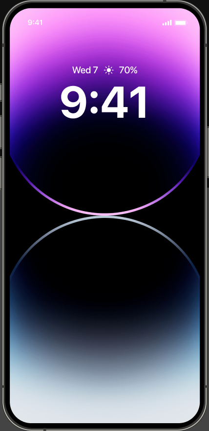

Swipe currently carries multiple meanings - swipe to dismiss an activity, bring it back, or switch primary and secondary causing accidental triggers.
What the interaction is and - the context in which it is used
The Dynamic Island is the small pill-shaped region at the top of iPhone screens (introduced on iPhone 14 Pro in 2022) that physically surrounds the front camera and Face ID sensors. What looks like a static piece of hardware is actually a software interaction surface that morphs in shape, size, and content depending on the app activities happening on the device.
Its context of use is ambient awareness during multitasking. It has three discrete states: a compact resting state which shows an activity icon and a small piece of data related to the activity, an expanded state when you long-press it (a richer card with controls), and a tap state that takes you back into the source app. It can also host two activities simultaneously by splitting visually around the camera. On swipe - you can switch to the second latest app activity of your choice or dismiss/retain an activity.
Design decisions that make it effective
The single design move that makes it remarkable is this:
“Apple turned a hardware constraint into the most distinctive interaction surface on the device.”
The front-facing camera array is a physical interruption to the screen. In other phones it’s either dissolved into a full-width bar, stealing a few mms off the screen, or a notch which takes space away from the top bar. Apple turned this bug into a feature - one that fits so seamlessly into your flow that it changed the way you use apps on an iPhone. It raised the bar for the entire third-party app ecosystem and enabled them to step up to accommodate this interaction.
-
Physical anchoring to hardware
The Island is always in the same place because the camera is always in the same place. That immutable position becomes a mental landmark.
-
The fluid morphology
The transitions between states aren’t simple resize animations - they use a custom spring physics that makes the shape feel like a single liquid object stretching and contracting. When two activities are present, the pill splits around the camera with a physical-feeling separation rather than a hard cut. Any stutter would break the metaphor, so the transitions are tuned to stay smooth across every state change.
-
Information hierarchy across states
The compact state shows only an icon and one tiny piece of data (a timer’s remaining seconds, a music waveform, a recording dot). The expanded state shows a fuller card with controls. You get just enough to be aware, and the rest is one gesture away.
-
System-wide API for third parties (Live Activities and ActivityKit)
The decision to require a structured API (rather than letting apps draw whatever they want) means quality stays high. Apps fill predefined templates, so nothing in the Island ever looks broken or off-brand. It’s also what makes the resilience point above possible: because the Live Activity is a system-managed surface and not a window into the app’s runtime, it can outlive crashes.
So Apple made this top bar more than just a notification space - it became a place where small, focused control UIs live. It occupies space you weren’t using anyway, due to the camera placement. The first time you see your timer slide out of an app and into the Island as you swipe up, the metaphor lands instantly. The activity is living somewhere persistent, and that somewhere is the same place every time. It’s exceptional in every way - through design, engineering, and understanding and building trust with users.
How it works from a user’s perspective
The problem it solves is the background activity tax. Every modern phone OS has the same challenge: you start something (timer, music, navigation, a call), switch apps, and now you’re cognitively responsible for remembering that thing is still happening.
You may close the app - but you will not lose context of the activity you opened the app for!
The Dynamic Island solves this by giving every background activity a persistent, peripheral home that you can ignore when you don’t need it and engage with the moment you do. The intuitive part is that the activity follows you. Wherever you go in the OS, your timer is there, your call is there, your boarding pass updates are there. You don’t have to navigate back to find it; it’s already at the edge of your attention.
Some of the apps we use most have meaningfully changed their interaction model around the Island - and the design decisions beneath the surface are why any of it works.
-
Live scores, no app switch
Apple Sports shows live scores in real time, so you never reopen it during a match - even when you're inside other apps.
-
Translate, anywhere
Translate keeps a live conversation surface available across any app you switch into. Live dictation, directly from the Island.
-
A cone of light, literally
Flashlight expands the pill into a control that physically resembles a cone of light - adjusting beam width and brightness in a way nothing else on iOS can.
-
ChatGPT keeps listening
Voice mode keeps its listening state alive in the Island when you switch apps - like multiple tabs on a laptop, you can look things up while you're talking.
One thing I’d improve
An important trade-off worth noting is that Apple has capped Live Activities at two simultaneous instances. When two activities are open, the pill splits into two parts - a pill-shaped region on the left of the camera and a circular bubble on the right. You can swipe to switch which is primary and which is secondary or swipe to dismiss it.
Problem
The smaller right-side bubble is hard to hit accurately. It sits close to the camera cutout and the tap target doesn’t have generous padding.
Improvement
The Dynamic Island was built on the foundation of reducing cognitive load and practicing restraint in how much information is shown at once. Two simultaneous Live Activities arguably goes against that principle.

+2
Queueing activities one after another instead of splitting the pill. Right and left swipe to switch.
Same swipe interaction on expanded card - A small queue indicator (“•• +1,”)
Dismissal - being a destructive action - should be nested inside the expanded card as a “−” or “×”.
Trade-off
Activities would still need to be capped, because there’s a real ceiling on how many concurrent ongoing activities a person can mentally track before the Island becomes noise. That’s a meaningful trade-off to keep, but it’s a cognitive ceiling rather than a visual one.
Conclusion
This change removes the split pill entirely - eliminating the accidental taps, the overloaded swipe gesture, and the pixel-perfect tap required to reach the smaller activity - while reducing the cognitive load of tracking multiple things at once.
This isn’t a future-proofing change; it’s a correction to a tradeoff that’s already showing restraint as Live Activities proliferate, and the queue-plus-cycle model is the cleanest way to fix it without abandoning what already works.